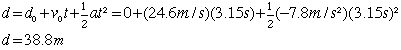
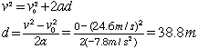

Auto stopping distanceUnder optimum conditions on a dry road, the coefficient of friction may be as high as 0.8, so that you could decelerate at 0.8g = 0.8 x 9.8 m/s^2 = 7.8 m/s^2. Solution: All constant acceleration problems can be solved using the basic motion equations.
In the equation, v is the velocity at a chosen time t. In this problem the initial velocity is given, and you know that v=0 since it is the velocity at the time when you stop. Examining the known and unknown quantities
b. The stopping distance may be calculated from the motion equation: Alternatively, the distance may be calculated from the combined motion equation form which eliminates the time from the calculation. 
|
Index Motion with constant acceleration | |||||||||
| HyperPhysics***** Mechanics | Go Back |